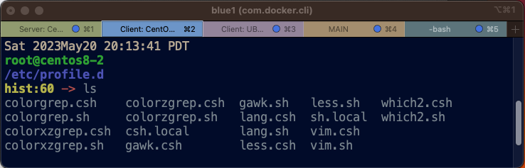

Conceptos e Introducción
Table of contents
Estructura del Sistema De Archivos (Filesystem)
La estructura general del sistema de archivos de Linux puede representarse the esta manera.
┌──────────────┐
│ root │
┌───────────────────┬────────────┴───────┬──────┴───────────┬──────────────────┐
│ │ │ │ │
┌──────▼────┐ ┌───────▼──────┐ ┌───────▼──────┐ ┌──────▼──────┐ ┌──────▼─────┐
│ /home │ │ /usr │ │ /var │ │ /opt │ │ /mnt │
└───────────┘ └──────────────┘ └──────────────┘ └─────────────┘ └────────────┘
El diseño, organizacíon y jerarquia del sistema de archivoes puede modificarse para satisfacer necesidades específicas.
El admininistrador de sistemas tiene la libertad the hacer ajustes en lo pertinente a la localizacíon absoluta del archivo asi como el tamaño correspondiente de cada parte del mismo.
En este ejemplo, el comando df nos muestra la organización típica de un maquina virtual de CentOS 8 Stream.
$ df -h
Filesystem Size Used Avail Use% Mounted on
overlay 59G 22G 35G 39% /
tmpfs 64M 0 64M 0% /dev
shm 64M 0 64M 0% /dev/shm
tmpfs 7.9G 377M 7.5G 5% /run
La estructura es similar en Ubuntu.
La Terminal
La terminal es el area de trabajo donde podemos escribir comandos para interactuar con el sistema.

El Shell
El Shell es el programa que accepta los comandos que entramos y los ejecuta para realizar la acción deseada en el sistema. El Shell es la manera fundamental como interactuamos con el Sistema Operativo.
Típicamente, Linux ofrece el BASH shell de entrada. Pero hay otros que podemos escoger tales como SH, CSH, TCSH, o ZSH.
Cuando entramos al sistema, decimos que estamos en el Shell. Podemos usar la variable de ambiente $SHELL para saber cual nos ha sido asignado de facto. En el ejemplo que sigue, tenemos el BOURNE SHELL o SH.
$ echo $SHELL
/bin/sh
El Shell provee el prompt designado por el signo $ arriba. El prompt viene a ser el lugar donde podemos entrar comandos. Esto se conoce como la Linea De Comandos.
A menos que indiquemos de otra manera, usaremos el BASH shell en los ejemplos y ejercicions que hemos de exponer.
Linea De Comandos (Command Line)
La Linea De Comandos es el área de la terminal donde entramos las instrucciones que queremos mandar al sistema operativo. EL shell esta encargado de interpretar los comandos y los pasa a el Kernel para ejecutar la tarea especifica.
Nos vamos a referir a la Linea De Comandos for sus siglas en Ingles: CLI, lo que significa Command Line Inteface o Interfaz de la Linea de Comandos.
Generalmente, la CLI se identifica for el signo de dólar $ cuando entramos al sistema. Eso puede ser personalizado en cualquier momento.
En este ejemplo, escribimos comandos que nos ayudan a identificar el usuario con que hemos entrado al sistema.
$ id
uid=0(root) gid=0(root) groups=0(root)
$ whoami
root
Ha veces, cuando los comandos son largos y complejos, nos vemos en la necesidad de editar para afectar el resultado deseado. Las siguientes combinaciones de teclados facilitan la manipulación de la linea de la CLI.
- CTRL-a
- Mover el cursor al principio de la linea de entrada
- CTRL-e
- Mover el cursor al final de la linea de entrada
- CTRL-l
- borrar todo el texto de la terminal
- CTRL-u
- borra la linea de entrada completamente
- CTRL-_
- revertir la última acción de teclado
- ENTER
- mandar el comando al shell (bash, csh, zsh, etc)
- DEL
- borrar el simbolo en el que se encuentra el cursor
Tipicamente, en CentOS 8 la CLI se ve asi:
[user1@centos8-2 ~]$
Mientras que Ubuntu se ve asi:
$
Podeos escribir comandos en el area marcada for el signo $.
El Indicator (The Prompt)
El indicador marca la parte de la terminal donde podemos entrar comandos. Generalmente se indica con el signo $.
Si el indicador muestra el signo # en lugar de $, indica que hemos entrado con la cuenta del superusuario (root), la cual tiene control absoluto del sistema. Un solo comando equivocado y podemos causar gran daño.
El indicador es primariamente designado con la variable de ambiente PS1, la cual es configurable de la manera que nos plazca. Podemos designar cualquier símbolo en vez de $ o #.
En el ejemplo que sigue, el signo de $ es por defecto. Podemos usar el comando export para cambiarlo a comando>> . Luego usamos echo para verificar el ajuste.
$
$ export PS1='comando>> '
comando>>
comando>> echo $PS1
comando>>
Discutiremos el uso del comando export en otro documento.
Directorio De Inicio (Home Directory)
El directorio de inicio es donde aterrizamos y es nuestra base de operaciones. Es aquí donde creamos y mantenemos todos lo archivos, directorios, documentos, imagenes, programas y personalizaciones particulares a nuestro propio ambiente.
Tan pronto como entramos al sistema, el comando pwd nos asiste para mostrarnos la localidad del directorio de inicio.
$ pwd
/root
Podemos usar echo para mostrar el directorio de inicio en cualquier momento después de esta en una sessión for algun tiempo.
$ echo $HOME
/root
La localidad estándar donde Linux create directorios de inicio es bajo /home, de manera que usualmente un usuario tiene /home/user1. Pero lo localidad puede cambiar de acuerdo al diseño del administrador de sistemas.
Páginas Manuales (Man Pages)
Las páginas manuales son documentos disponibles internamente en el sistema que nos proveen información acerca de las diferentes funciones y comandos disponibles.
Por ejemplo la instrucción man ls nos muestra la página manual del comando ls que usamos para lstar archivos y directorios. Abajo vemos un extracto recortado de la página manual de ls.
NOMBRE
ls, dir, vdir - listan los contenidos de directorios
SINOPSIS
ls [opciones] [fichero...]
dir [fichero...]
vdir [fichero...]
Opciones de POSIX: [-CFRacdilqrtu1]
Opciones de GNU (en la forma más corta): [-1abcdfghiklmnopqrstuvwxABCDFGHLNQRSUX] [-w
cols] [-T cols] [-I patrón] [--full-time] [--show-control-chars] [--block-size=tamaño]
[--format={long,verbose,commas,across,vertical,single-column}]
DESCRIPCIÓN
El programa ls lista primero sus argumentos no directorios fichero, y luego para cada
argumento directorio todos los ficheros susceptibles de listarse contenidos en dicho
directorio.
OPCIONES DE POSIX
-C Lista los ficheros en columnas, ordenados verticalmente.
-F Añade tras cada nombre de directorio un `/', tras cada nombre de FIFO un `|', y
tras cada nombre de un ejecutable un `*'.
(...snip...)
Las páginas manuales de Ubuntu están disponibles en linea 1
Es de notar que las páginas manuales no están instaladas por defecto en máquinas virtuales. El usuario puede instalar las páginas manuales para la localización que corresponda al idioma del usuario. Al entrar el comando man ls en una máquina virtual de Ubuntu, vemos este mensaje indicando que ha sido optimizada para remover espacio que no es crítico para operaciones normales.
-> man ls
This system has been minimized by removing packages and content that are
not required on a system that users do not log into.
To restore this content, including manpages, you can run the 'unminimize'
command. You will still need to ensure the 'man-db' package is installed.
Es bastante común remover componentes innecesarios de servidores que no requieren cosas tales como páginas manuales.